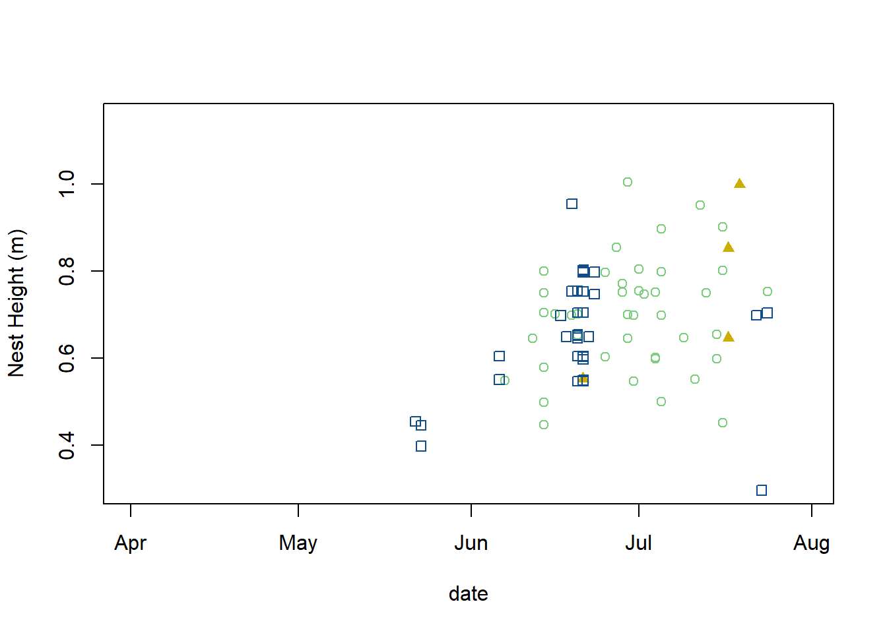
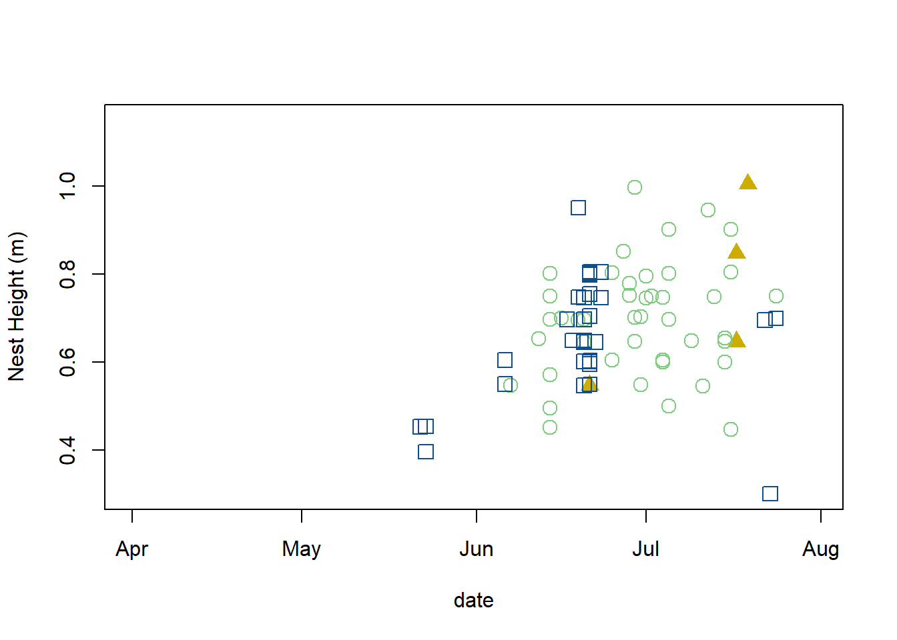
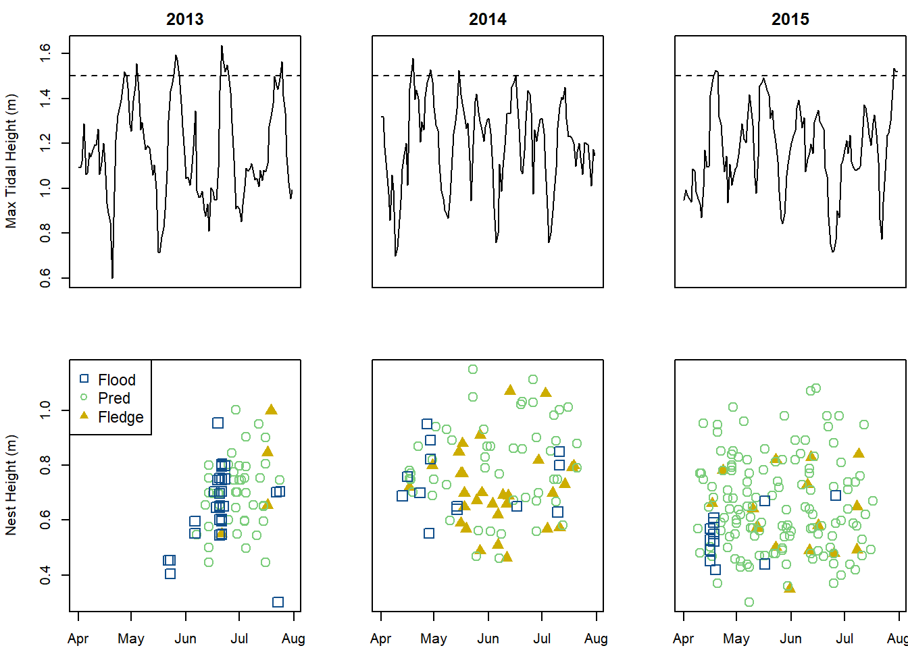
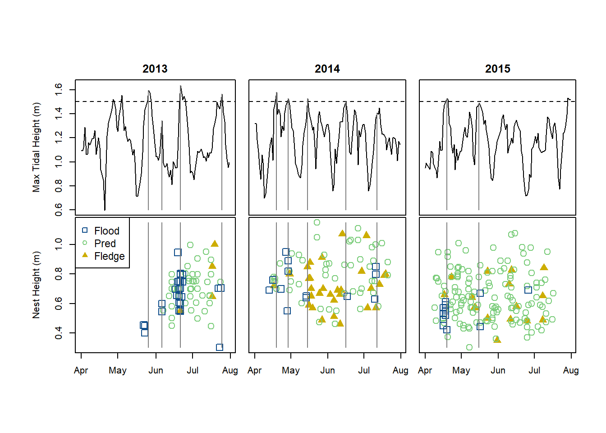

For those wishing to follow along with the R-based demo in class, click here for the companion R script.
NOTE: this demo was originally built by Dr. Elizabeth Hunter in fall 2016 and has been modified slightly from its original version.
Download the first example dataset by clicking here.
Download the second example dataset by clicking here.
Save both files to your working directory.
These data are nest fates for Seaside Sparrows that live in tidal marshes. We’re going to make a figure that shows both how nest height and tidal height affect Seaside Sparrow nest fates. See Hunter et al. 2016 Animal Behaviour for more information.
library(lubridate)
##############
# Read in and tidy up the Seaside Sparrow data
tide = read.csv("tide_ALL_navd_hh.csv", header=TRUE)
tide$Date = mdy_hm(tide$Date)
tide$Date = as.Date(tide$Date) # remove time component
tide$Year = year(tide$Date)
tide.13 = tide[tide$Year==2013,] # subset by year
tide.14 = tide[tide$Year==2014,]
tide.15 = tide[tide$Year==2015,]
#Take a look at data structure
head(tide)## Date Water_Level Year
## 1 2013-04-01 1.096 2013
## 2 2013-04-02 1.093 2013
## 3 2013-04-03 1.118 2013
## 4 2013-04-04 1.287 2013
## 5 2013-04-05 1.062 2013
## 6 2013-04-06 1.067 2013# str(tide)
bn = read.csv("Nest_basic_ALL.csv", header=TRUE)
#Extract pertinent data
bn = bn[bn$Species=="SESP",]
bn = bn[bn$Fate_date!="",]
bn = bn[bn$Fate!="NA",]
bn = bn[bn$Fate!=4,]
bn = na.omit(bn)
#Put dates/times in correct format
bn$Date_found = mdy(bn$Date_found)
bn$Fate_date = mdy(bn$Fate_date)
bn$Start_date = mdy(bn$Start_date)
bn$year = year(bn$Start_date)
bn = bn[order(bn$year, -bn$Fate),]
bn.13 = bn[bn$year==2013,]
bn.14 = bn[bn$year==2014,]
bn.15 = bn[bn$year==2015,]
#Take a look at data structure
head(bn)## NestID Species Date_found Veg_spp Veg_height Nest_height Fate Fate_date
## 36 CRD21 SESP 2013-06-22 SPARALTE 1.25 0.550 5 2013-06-21
## 334 SSC37 SESP 2013-06-26 SPARALTE 1.50 1.000 5 2013-07-19
## 338 SSC40 SESP 2013-06-26 SPARALTE 1.25 0.850 5 2013-07-17
## 341 SSC43 SESP 2013-06-28 SPARALTE 1.25 0.650 5 2013-07-17
## 24 CRD10 SESP 2013-06-12 SPARALTE 0.85 0.500 3 2013-06-14
## 25 CRD11 SESP 2013-06-12 SPARALTE 0.85 0.575 3 2013-06-14
## Fate_time Female Male Def_Pairs Lik_Pairs Prev_Nest Start_date year
## 36 2013-06-20 2013
## 334 7:00:00 PS7 SSC10 2013-06-27 2013
## 338 19:00:00 PS10 SSC12 2013-06-26 2013
## 341 18:00:00 PS13 SSC21 2013-06-28 2013
## 24 4:00:00 2013-06-12 2013
## 25 15:00:00 PC1 2013-06-12 2013# str(bn)First, we’ll start by making single-panel figures of tides and nest fates.
################
# Start making figures
################
##############
#Plot tide height as a function of time
plot(tide.13$Water_Level ~ tide.13$Date, type="l")#Fix up the plot a bit
plot(tide.13$Water_Level ~ tide.13$Date, type="l", ylab="Max Tidal Height (m)", lwd=1, main="2013", xlab="")
#Add segment(s) to show when in the tidal cycle sparrow nests were flooded
segments(x0=ymd("2013-05-26"), x1=ymd("2013-05-26"), y0=0.5, y1=1.595, col=gray(0.5))##############
#Plot nest fate as a function of time and nest height
plot(x=bn.13$Fate_date, y=bn.13$Nest_height, xlim=c(min(tide.13$Date), max(tide.13$Date)),
ylim=c(min(bn$Nest_height), max(bn$Nest_height)), ylab="Nest Height (m)")#"Jitter" to show overlapping points
plot(x=bn.13$Fate_date, y=jitter(bn.13$Nest_height), xlim=c(min(tide.13$Date), max(tide.13$Date)),
ylim=c(min(bn$Nest_height), max(bn$Nest_height)), ylab="Nest Height (m)")#Color and shapes to distiguish fates
plot(x=bn.13$Fate_date, y=jitter(bn.13$Nest_height), xlim=c(min(tide.13$Date), max(tide.13$Date)),
ylim=c(min(bn$Nest_height), max(bn$Nest_height)), ylab="Nest Height (m)",xlab="date",
col=ifelse(bn.13$Fate==1, "dodgerblue4", ifelse(bn.13$Fate==3, "palegreen3", "gold3")),
pch=ifelse(bn.13$Fate==1, 0, ifelse(bn.13$Fate==3, 1, 17)))
#Cex to change size of pch
plot(x=bn.13$Fate_date, y=jitter(bn.13$Nest_height), xlim=c(min(tide.13$Date), max(tide.13$Date)),
ylim=c(min(bn$Nest_height), max(bn$Nest_height)), ylab="Nest Height (m)",xlab="date",
col=ifelse(bn.13$Fate==1, "dodgerblue4", ifelse(bn.13$Fate==3, "palegreen3", "gold3")),
pch=ifelse(bn.13$Fate==1, 0, ifelse(bn.13$Fate==3, 1, 17)), cex=1.5)
There are several ways to make multipanel figures in R. We’ll start with the easiest (changing the par(mfrow) options), and then look at how to use layout() to make a publication-ready figure.
###################
#Multipanel plotting using par(mfrow) and par(mar) to change panel margins.
par(mfrow=c(2,3), mar=c(2, 4, 2, 0) + 0.1) ## set panels and graphics margins
### First panel
plot(tide.13$Water_Level ~ tide.13$Date, type="l", ylim=c(min(tide$Water_Level), max(tide$Water_Level)), ylab="Max Tidal Height (m)", lwd=1,
xaxt="n", main="2013")
abline(1.5, 0, lty=2)
### Second panel
plot(tide.14$Water_Level ~ tide.14$Date, type="l", ylim=c(min(tide$Water_Level), max(tide$Water_Level)), ylab="", lwd=1,
xaxt="n", yaxt="n", main="2014")
abline(1.5, 0, lty=2)
### Third panel
plot(tide.15$Water_Level ~ tide.15$Date, type="l", ylim=c(min(tide$Water_Level), max(tide$Water_Level)), ylab="", lwd=1,
xaxt="n", yaxt="n", main="2015")
abline(1.5, 0, lty=2)
### Fourth panel (with legend)
plot(x=bn.13$Fate_date, y=jitter(bn.13$Nest_height), col=ifelse(bn.13$Fate==1, "dodgerblue4", ifelse(bn.13$Fate==3, "palegreen3", "gold3")),
pch=ifelse(bn.13$Fate==1, 0, ifelse(bn.13$Fate==3, 1, 17)), xlim=c(min(tide.13$Date), max(tide.13$Date)),
ylim=c(min(bn$Nest_height), max(bn$Nest_height)), ylab="Nest Height (m)", cex=1.5)
legend("topleft", legend=c("Flood", "Pred", "Fledge"), col=c("dodgerblue4", "palegreen3", "gold3"), pch=c(0,1,17), cex=1.1)
### Fifth panel
plot(x=bn.14$Fate_date, y=jitter(bn.14$Nest_height), col=ifelse(bn.14$Fate==1, "dodgerblue4", ifelse(bn.14$Fate==3, "palegreen3", "gold3")),
pch=ifelse(bn.14$Fate==1, 0, ifelse(bn.14$Fate==3, 1, 17)), xlim=c(min(tide.14$Date), max(tide.14$Date)),
ylim=c(min(bn$Nest_height), max(bn$Nest_height)), ylab="", yaxt="n", cex=1.5)
### Sixth panel
plot(x=bn.15$Fate_date, y=jitter(bn.15$Nest_height), col=ifelse(bn.15$Fate==1, "dodgerblue4", ifelse(bn.15$Fate==3, "palegreen3", "gold3")),
pch=ifelse(bn.15$Fate==1, 0, ifelse(bn.15$Fate==3, 1, 17)), xlim=c(min(tide.15$Date), max(tide.15$Date)),
ylim=c(min(bn$Nest_height), max(bn$Nest_height)), ylab="", yaxt="n", cex=1.5)
This looks okay, but we want our panels to be closer together and for our y-axis labels to have more room.
The “layout()” function is a flexible, easy to use way to make multi-panel figures.
##################
#Multipanel plotting using layout()
temp.layout <- layout(matrix(c(1,2,3,4,5,6),2,3,byrow=TRUE), widths=c(lcm(6.1),lcm(5),lcm(5)), heights=c(lcm(4.7),lcm(4.7)))
#Take a look at the layout we've created.
layout.show(temp.layout)#NOTE: Here we will change the panel margins for each panel separately using par(mar)
#### First panel
par(mar=c(0, 4, 2, 0) + 0.1)
plot(tide.13$Water_Level ~ tide.13$Date, type="l", ylim=c(min(tide$Water_Level), max(tide$Water_Level)), ylab="Max Tidal Height (m)", lwd=1,
xaxt="n", main="2013")
abline(1.5, 0, lty=2)
segments(x0=as.Date("2013-05-26"), x1=as.Date("2013-05-26"), y0=0.6, y1=1.595, col=gray(0.5))
segments(x0=as.Date("2013-06-06"), x1=as.Date("2013-06-06"), y0=0.6, y1=1.344, col=gray(0.5))
segments(x0=as.Date("2013-06-21"), x1=as.Date("2013-06-21"), y0=0.6, y1=1.638, col=gray(0.5))
segments(x0=as.Date("2013-07-25"), x1=as.Date("2013-07-25"), y0=0.6, y1=1.566, col=gray(0.5))
#### Second panel
par(mar=c(0, 1, 2, 0) + 0.1)
plot(tide.14$Water_Level ~ tide.14$Date, type="l", ylim=c(min(tide$Water_Level), max(tide$Water_Level)), ylab="Max Tidal Height (m)", lwd=1,
xaxt="n", yaxt="n", main="2014")
abline(1.5, 0, lty=2)
segments(x0=as.Date("2014-04-19"), x1=as.Date("2014-04-19"), y0=0.6, y1=1.579, col=gray(0.5))
segments(x0=as.Date("2014-04-29"), x1=as.Date("2014-04-29"), y0=0.6, y1=1.527, col=gray(0.5))
segments(x0=as.Date("2014-05-15"), x1=as.Date("2014-05-15"), y0=0.6, y1=1.526, col=gray(0.5))
segments(x0=as.Date("2014-06-16"), x1=as.Date("2014-06-16"), y0=0.6, y1=1.502, col=gray(0.5))
segments(x0=as.Date("2014-07-12"), x1=as.Date("2014-07-12"), y0=0.6, y1=1.406, col=gray(0.5))
#### Third panel
par(mar=c(0, 1, 2, 0) + 0.1)
plot(tide.15$Water_Level ~ tide.15$Date, type="l", ylim=c(min(tide$Water_Level), max(tide$Water_Level)), ylab="Max Tidal Height (m)", lwd=1,
xaxt="n", yaxt="n", main="2015")
abline(1.5, 0, lty=2)
segments(x0=as.Date("2015-04-19"), x1=as.Date("2015-04-19"), y0=0.6, y1=1.526, col=gray(0.5))
segments(x0=as.Date("2015-05-16"), x1=as.Date("2015-05-16"), y0=0.6, y1=1.491, col=gray(0.5))
#### Fourth panel
par(mar=c(2, 4, 0, 0) + 0.1)
plot(x=bn.13$Fate_date, y=jitter(bn.13$Nest_height), col=ifelse(bn.13$Fate==1, "dodgerblue4", ifelse(bn.13$Fate==3, "palegreen3", "gold3")),
pch=ifelse(bn.13$Fate==1, 0, ifelse(bn.13$Fate==3, 1, 17)), xlim=c(min(tide.13$Date), max(tide.13$Date)),
ylim=c(min(bn$Nest_height), max(bn$Nest_height)), ylab="Nest Height (m)", cex=1.5)
segments(x0=as.Date("2013-05-26"), x1=as.Date("2013-05-26"), y0=0.3, y1=1.15, col=gray(0.5))
segments(x0=as.Date("2013-06-06"), x1=as.Date("2013-06-06"), y0=0.3, y1=1.15, col=gray(0.5))
segments(x0=as.Date("2013-06-21"), x1=as.Date("2013-06-21"), y0=0.3, y1=1.15, col=gray(0.5))
segments(x0=as.Date("2013-07-25"), x1=as.Date("2013-07-25"), y0=0.3, y1=1.15, col=gray(0.5))
legend("topleft", legend=c("Flood", "Pred", "Fledge"), col=c("dodgerblue4", "palegreen3", "gold3"), pch=c(0,1,17), cex=1.1)
#### Fifth panel
par(mar=c(2, 1, 0, 0) + 0.1)
plot(x=bn.14$Fate_date, y=jitter(bn.14$Nest_height), col=ifelse(bn.14$Fate==1, "dodgerblue4", ifelse(bn.14$Fate==3, "palegreen3", "gold3")),
pch=ifelse(bn.14$Fate==1, 0, ifelse(bn.14$Fate==3, 1, 17)), xlim=c(min(tide.14$Date), max(tide.14$Date)),
ylim=c(min(bn$Nest_height), max(bn$Nest_height)), ylab="Nest Height (m)", yaxt="n", cex=1.5)
segments(x0=as.Date("2014-04-19"), x1=as.Date("2014-04-19"), y0=0.3, y1=1.15, col=gray(0.5))
segments(x0=as.Date("2014-04-29"), x1=as.Date("2014-04-29"), y0=0.3, y1=1.15, col=gray(0.5))
segments(x0=as.Date("2014-05-15"), x1=as.Date("2014-05-15"), y0=0.3, y1=1.15, col=gray(0.5))
segments(x0=as.Date("2014-06-16"), x1=as.Date("2014-06-16"), y0=0.3, y1=1.15, col=gray(0.5))
segments(x0=as.Date("2014-07-12"), x1=as.Date("2014-07-12"), y0=0.3, y1=1.15, col=gray(0.5))
#### Sixth panel
par(mar=c(2, 1, 0, 0) + 0.1)
plot(x=bn.15$Fate_date, y=jitter(bn.15$Nest_height), col=ifelse(bn.15$Fate==1, "dodgerblue4", ifelse(bn.15$Fate==3, "palegreen3", "gold3")),
pch=ifelse(bn.15$Fate==1, 0, ifelse(bn.15$Fate==3, 1, 17)), xlim=c(min(tide.15$Date), max(tide.15$Date)),
ylim=c(min(bn$Nest_height), max(bn$Nest_height)), ylab="Nest Height (m)", yaxt="n", cex=1.5)
segments(x0=as.Date("2015-04-19"), x1=as.Date("2015-04-19"), y0=0.3, y1=1.15, col=gray(0.5))
segments(x0=as.Date("2015-05-16"), x1=as.Date("2015-05-16"), y0=0.3, y1=1.15, col=gray(0.5))
The “split.screen()” function is a flexible way to make paneled figures. Check out: http://seananderson.ca/courses/11-multipanel/multipanel.pdf
Try adding these other arguments to the plot() function:
+ To change orientation of figure labels: las=2
+ To put the tick marks inside the plot: tcl=0.5
+ To get rid of the bounding box: bty=“l”
To add text to any figure:
#######
# to add text to any figure...
text(x=ymd("2015-07-25"), y=1.1, "a")Now we want to write our figure directly to a vector graphics file that has the correct dimensions for a double column figure in a publication (no further editing required!).
###
#Write figure to a pdf (or other format) with the correct dimensions for publication
#NOTE: using 'pdf()' will not plot within RStudio, but directly write a file to your working directory
pdf("Figure2.pdf", width=7.6, height=3.8) # set the PDF
layout(matrix(c(1,2,3,4,5,6),2,3,byrow=TRUE), widths=c(lcm(7),lcm(6),lcm(6)), heights=c(lcm(4.7),lcm(4.7))) # set the layout
#### first panel
par(mar=c(0, 4, 2, 0) + 0.1)
plot(tide.13$Water_Level ~ tide.13$Date, type="l", ylim=c(min(tide$Water_Level), max(tide$Water_Level)), ylab="Max Tidal Height (m)", lwd=1,
xaxt="n", main="2013")
abline(1.5, 0, lty=2)
segments(x0=as.Date("2013-05-26"), x1=as.Date("2013-05-26"), y0=0.6, y1=1.595, col=gray(0.5))
segments(x0=as.Date("2013-06-06"), x1=as.Date("2013-06-06"), y0=0.6, y1=1.344, col=gray(0.5))
segments(x0=as.Date("2013-06-21"), x1=as.Date("2013-06-21"), y0=0.6, y1=1.638, col=gray(0.5))
segments(x0=as.Date("2013-07-25"), x1=as.Date("2013-07-25"), y0=0.6, y1=1.566, col=gray(0.5))
#### second panel
par(mar=c(0, 1, 2, 0) + 0.1)
plot(tide.14$Water_Level ~ tide.14$Date, type="l", ylim=c(min(tide$Water_Level), max(tide$Water_Level)), ylab="Max Tidal Height (m)", lwd=1,
xaxt="n", yaxt="n", main="2014")
abline(1.5, 0, lty=2)
segments(x0=as.Date("2014-04-19"), x1=as.Date("2014-04-19"), y0=0.6, y1=1.579, col=gray(0.5))
segments(x0=as.Date("2014-04-29"), x1=as.Date("2014-04-29"), y0=0.6, y1=1.527, col=gray(0.5))
segments(x0=as.Date("2014-05-15"), x1=as.Date("2014-05-15"), y0=0.6, y1=1.526, col=gray(0.5))
segments(x0=as.Date("2014-06-16"), x1=as.Date("2014-06-16"), y0=0.6, y1=1.502, col=gray(0.5))
segments(x0=as.Date("2014-07-12"), x1=as.Date("2014-07-12"), y0=0.6, y1=1.406, col=gray(0.5))
#### third panel
par(mar=c(0, 1, 2, 0) + 0.1)
plot(tide.15$Water_Level ~ tide.15$Date, type="l", ylim=c(min(tide$Water_Level), max(tide$Water_Level)), ylab="Max Tidal Height (m)", lwd=1,
xaxt="n", yaxt="n", main="2015")
abline(1.5, 0, lty=2)
segments(x0=as.Date("2015-04-19"), x1=as.Date("2015-04-19"), y0=0.6, y1=1.526, col=gray(0.5))
segments(x0=as.Date("2015-05-16"), x1=as.Date("2015-05-16"), y0=0.6, y1=1.491, col=gray(0.5))
#### fourth panel
par(mar=c(2, 4, 0, 0) + 0.1)
plot(x=bn.13$Fate_date, y=jitter(bn.13$Nest_height), col=ifelse(bn.13$Fate==1, "dodgerblue4", ifelse(bn.13$Fate==3, "palegreen3", "gold3")),
pch=ifelse(bn.13$Fate==1, 0, ifelse(bn.13$Fate==3, 1, 17)), xlim=c(min(tide.13$Date), max(tide.13$Date)),
ylim=c(min(bn$Nest_height), max(bn$Nest_height)), ylab="Nest Height (m)", cex=1.5)
segments(x0=as.Date("2013-05-26"), x1=as.Date("2013-05-26"), y0=0.3, y1=1.15, col=gray(0.5))
segments(x0=as.Date("2013-06-06"), x1=as.Date("2013-06-06"), y0=0.3, y1=1.15, col=gray(0.5))
segments(x0=as.Date("2013-06-21"), x1=as.Date("2013-06-21"), y0=0.3, y1=1.15, col=gray(0.5))
segments(x0=as.Date("2013-07-25"), x1=as.Date("2013-07-25"), y0=0.3, y1=1.15, col=gray(0.5))
legend("topleft", legend=c("Flood", "Pred", "Fledge"), col=c("dodgerblue4", "palegreen3", "gold3"), pch=c(0,1,17), cex=1.1)
#### fifth panel
par(mar=c(2, 1, 0, 0) + 0.1)
plot(x=bn.14$Fate_date, y=jitter(bn.14$Nest_height), col=ifelse(bn.14$Fate==1, "dodgerblue4", ifelse(bn.14$Fate==3, "palegreen3", "gold3")),
pch=ifelse(bn.14$Fate==1, 0, ifelse(bn.14$Fate==3, 1, 17)), xlim=c(min(tide.14$Date), max(tide.14$Date)),
ylim=c(min(bn$Nest_height), max(bn$Nest_height)), ylab="Nest Height (m)", yaxt="n", cex=1.5)
segments(x0=as.Date("2014-04-19"), x1=as.Date("2014-04-19"), y0=0.3, y1=1.15, col=gray(0.5))
segments(x0=as.Date("2014-04-29"), x1=as.Date("2014-04-29"), y0=0.3, y1=1.15, col=gray(0.5))
segments(x0=as.Date("2014-05-15"), x1=as.Date("2014-05-15"), y0=0.3, y1=1.15, col=gray(0.5))
segments(x0=as.Date("2014-06-16"), x1=as.Date("2014-06-16"), y0=0.3, y1=1.15, col=gray(0.5))
segments(x0=as.Date("2014-07-12"), x1=as.Date("2014-07-12"), y0=0.3, y1=1.15, col=gray(0.5))
#### sixth panel
par(mar=c(2, 1, 0, 0) + 0.1)
plot(x=bn.15$Fate_date, y=jitter(bn.15$Nest_height), col=ifelse(bn.15$Fate==1, "dodgerblue4", ifelse(bn.15$Fate==3, "palegreen3", "gold3")),
pch=ifelse(bn.15$Fate==1, 0, ifelse(bn.15$Fate==3, 1, 17)), xlim=c(min(tide.15$Date), max(tide.15$Date)),
ylim=c(min(bn$Nest_height), max(bn$Nest_height)), ylab="Nest Height (m)", yaxt="n", cex=1.5)
segments(x0=as.Date("2015-04-19"), x1=as.Date("2015-04-19"), y0=0.3, y1=1.15, col=gray(0.5))
segments(x0=as.Date("2015-05-16"), x1=as.Date("2015-05-16"), y0=0.3, y1=1.15, col=gray(0.5))
dev.off() ### save to file